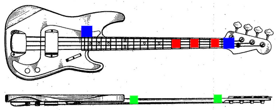
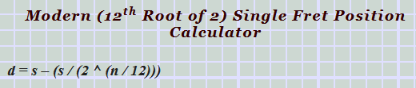
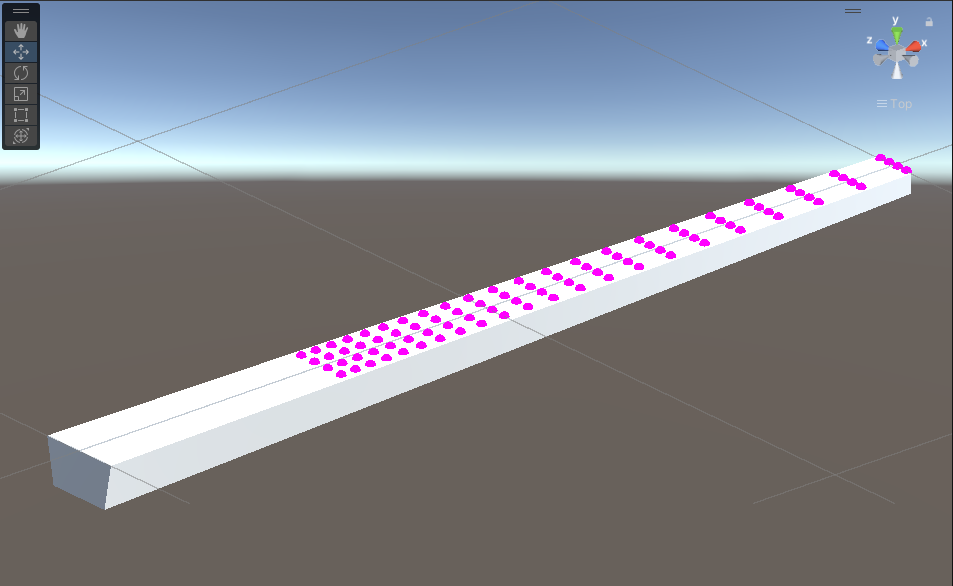
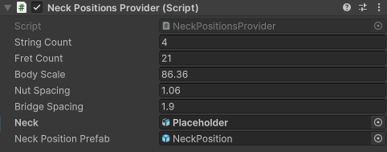

Per il discorso del problema di tracciamento con marker, mi e' stato detto di pormi come obiettivo temporaneo di porre tracker sulla parte frontale non ostruita dalle corde e di tracciare quei punti (come se l'utente fosse di fronte ad uno specchio e potesse vedere entrambi i punti).
I punti da tracciare per ora sono quelli in blu.
L'implementazione con due marker permette di specificare offset del punto nei confronti del ponte e capotasto per i rispettivi marker, per orientare il manico sulla lunghezza dello strumento, utilizza i dati di orientamento dei tracker, che a volte non sono affidabili. A questo fine ho scelto di creare una soluzione con tre marker, due sul corpo, in modo tale da ottenere il piano sul quale giaciono i tre marker, dal quale ottenendo la normale si puo' evitare di affidarsi ai dati di orientamento dei marker.
I punti sono generati secondo la seguente formula:
dove d e' distanza del fret dal capotasto, s la scala ponte-capotasto e n l'indice del fret del quale si vuole conoscere la distanza.
I parametri utilizzati in questa immagine sono basati sul modello P Fender, lo stesso nell'immagine con le posizioni dei marker.
